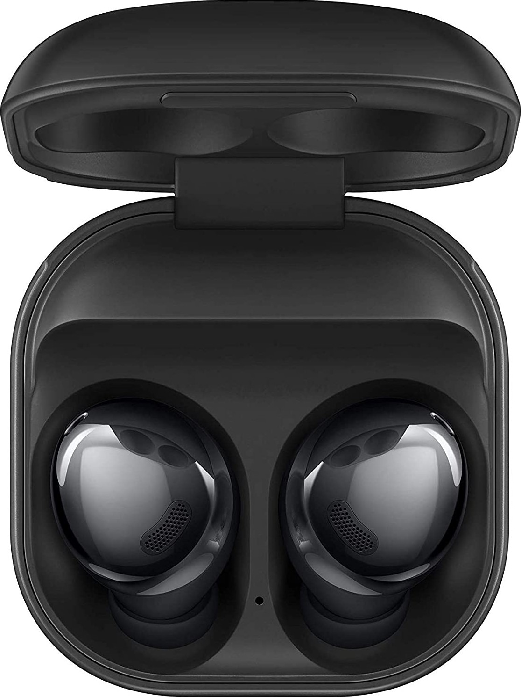
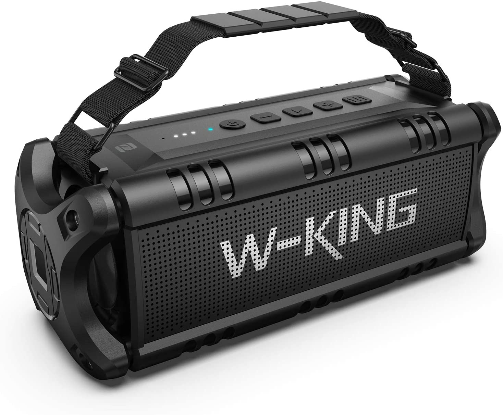
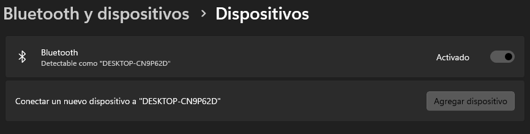
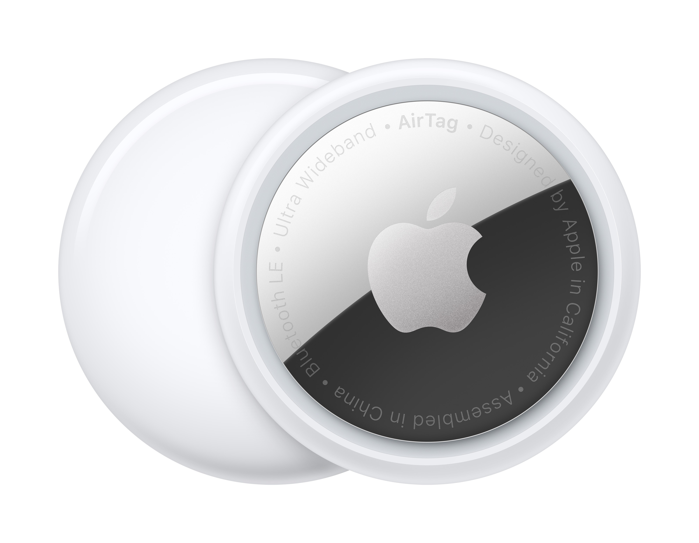
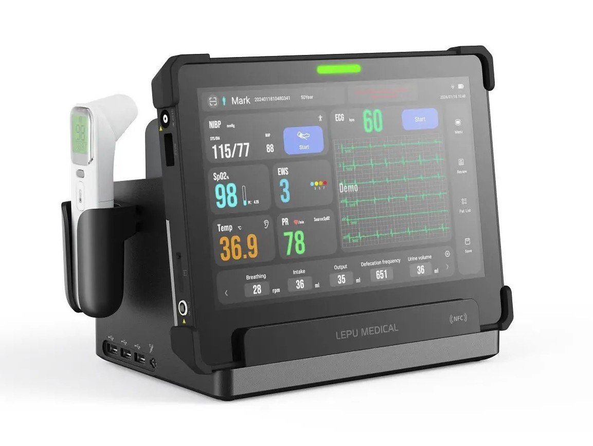
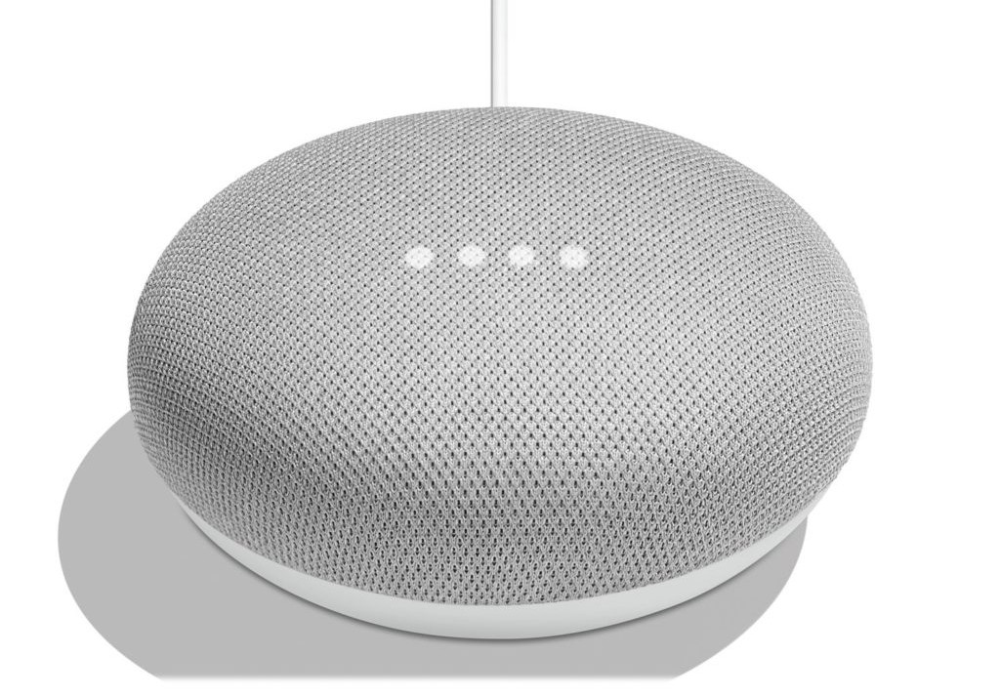
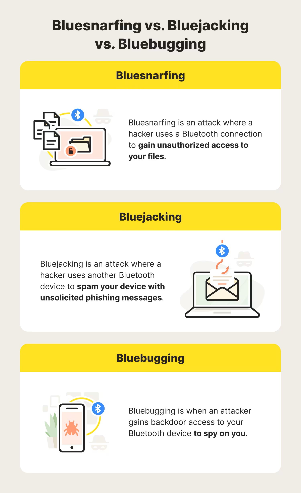
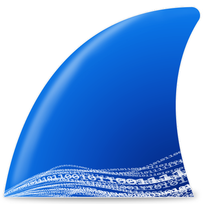

Bluetooth
Por Vicente Belén Más
1. Introducción a Bluetooth
Bluetooth es una tecnología inalámbrica de corto alcance que permite la comunicación entre diversos dispositivos electrónicos, como teléfonos, computadoras y auriculares, sin necesidad de cables.
El origen se remonta en 1994, cuando la empresa sueca Ericsson comenzó a desarrollar una solución para conectar dispositivos móviles sin cables. El nombre "Bluetooth" proviene del rey vikingo Harald "Blåtand" (Bluetooth) Gormsson, quien unificó tribus en el siglo X, simbolizando la idea de unir tecnologías. En 1998, Ericsson se unió a IBM, Intel, Nokia y Toshiba para formar el Bluetooth Special Interest Group (SIG), una organización que desde entonces ha liderado su desarrollo y estandarización.
- Bluetooth 1.0 (1999): Esta primera versión oficial fue básica, con velocidades de hasta 721 kbps con un alcance de unos 10m. No era muy estable.
- Bluetooth 2.0 + EDR (2004): Se introdujo Enhanced Data Rate (EDR), triplicando la velocidad hasta 3 Mbps.
- Bluetooth 3.0 + HS (2009): Con High Speed (HS), se alcanzaron velocidades de hasta 24 Mbps al usar Wi-Fi como complemento.
- Bluetooth 4.0 (2010): Marcó un hito con Bluetooth Low Energy (BLE), optimizado para dispositivos de bajo consumo, abriendo puertas al Internet de las Cosas (IoT).
- Bluetooth 5.0 (2016): Duplicó la velocidad (hasta 2 Mbps en modo BLE), cuadruplicó el alcance (hasta 240 metros en condiciones ideales) y mejoró la capacidad de transmisión.
- Bluetooth 5.1 (2019): Introdujo Direction Finding para mejorar la localización.
- Bluetooth 5.2 (2020): Agregó LE Audio y Isochronous Channels para mejorar la calidad de audio.
- Bluetooth 5.3 (2021) y 5.4 (2023): Mejoras en eficiencia energética y conectividad masiva para IoT.
Bluetooth se ha convertido en una herramienta esencial gracias a su versatilidad y facilidad de uso. Algunos ejemplos destacados son:
- Audio inalámbrico: Auriculares, altavoces portátiles, sistemas de manos libres en autos.
- Transferencia de datos: Envío de archivos sin necesidad de internet.
- Dispositivos inteligentes: IoT en el hogar: termostatos, bombillas, cerraduras.
- Wearables: Relojes inteligentes, pulseras de actividad.
2. Fundamentos Técnicos
Bluetooth opera en dos modos principales: Bluetooth Classic y Bluetooth Low Energy (BLE). Ambos comparten la misma banda de frecuencia (2.4 GHz), pero difieren en diseño, propósito y funcionamiento técnico.
2.1. Bluetooth Classic
- Propósito: Diseñado para conexiones continuas y transmisión de datos de mayor ancho de banda.
- Características técnicas:
- Velocidad: Hasta 3 Mbps.
- Alcance: Aproximadamente 10 metros.
- Consumo: Alto.
- Ejemplos de uso: Auriculares estéreo, altavoces inalámbricos, transferencia de archivos entre teléfonos.
- Limitaciones: No es eficiente para dispositivos con batería limitada debido a su alto consumo continuo.



2.2. Bluetooth Low Energy (BLE)
- Propósito: Optimizado para comunicaciones esporádicas ideales para IoT y wearables.
- Características técnicas:
- Velocidad: Hasta 2 Mbps.
- Alcance: Aproximadamente 240 metros (En condiciones ideales).
- Consumo: Muy bajo, gracias a su modo de "reposo" entre transmisiones.
- Ejemplos de uso: Sensores (temperatura, ritmo cardíaco), rastreadores (AirTags), dispositivos médicos.
- Limitaciones: No es eficiente para transmisión de datos de gran volumen como audio.




2.3. Cómo funciona
Protocolos de nivel superior:
- RFCOMM: Proporciona una interfaz de comunicación serial virtual.
- SDP: Permite a los dispositivos descubrir servicios disponibles.
- ATT y GATT: Usados en BLE para organizar datos y servicios.
- SPP: Emula un puerto serial en Bluetooth Classic.
- SMP: Protocolo de seguridad basado en cifrado AES-CCM.
- GAP: Define cómo los dispositivos se descubren e interactúan.
Capa L2CAP:
- Multiplexa datos entre protocolos superiores.
- Segmenta paquetes y asegura calidad de servicio.
Capa de enlace (Link Layer):
- Gestiona la conexión y emparejamiento.
- Bluetooth clásico usa el modelo maestro-esclavo.
- BLE usa el modelo cliente-servidor.

3. Seguridad en Bluetooth
Bluetooth es susceptible a ataques si no se implementan buenas prácticas de seguridad.
3.1. Amenazas comunes
- Bluejacking: Envío de mensajes no solicitados.
- Bluesnarfing: Robo de información sin autorización.
- Bluebugging: Control remoto del dispositivo.
- Man-in-the-Middle: Intercepción de la comunicación. Bluetooth Man In The Middle tool

3.2. Métodos de seguridad
- Cifrado AES-CCM en BLE y E0 Stream Cipher en Bluetooth Classic.
- Emparejamiento seguro con claves de autenticación. LE Secure Connections (+v4.2)
- Modos de seguridad GAP para restringir acceso (niveles: 1, 2, 3, 4). El nivel 4 cuenta con mayor protección gracias a que usa ECDH (+v2.1).
3.3. Recomendaciones
- Desactivar Bluetooth cuando no se use.
- No aceptar conexiones de dispositivos desconocidos o mensajes.
4. Comparación con otras tecnologías inalámbricas
- Wi-Fi: Mayor velocidad y cobertura, pero más consumo de energía.

- Zigbee/Z-Wave: Mejor eficiencia energética para IoT, pero menor alcance y velocidad.
- NFC: Rango muy corto, útil para pagos y acceso rápido.

5. Herramientas y Software para Bluetooth
- Wireshark: Captura y análisis de tráfico Bluetooth con Bluetooth HCI capture.

- BlueZ (Linux): Biblioteca para gestionar Bluetooth desde la terminal.

- nRF Connect (Android/iOS): Inspección y pruebas de dispositivos BLE.